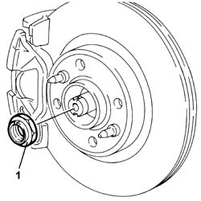
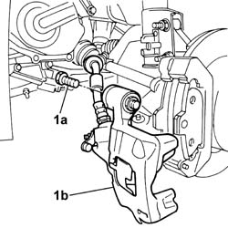
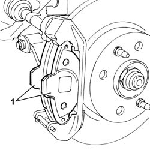
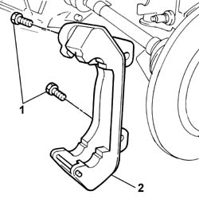
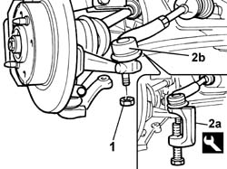
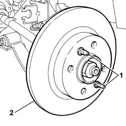
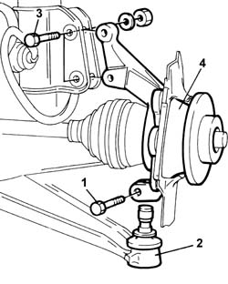
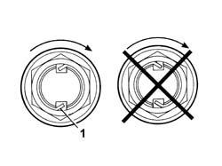

4450C10 front pillar (one), l/h or r/h complete with wheel hub - r+r with wheel removed - check wheel geometry separately
- Path
- Procedures > 44 SUSPENSION AND WHEELS > 4450 HUBS AND WHEELS > 4450C front wheel hubs > 4450C10 front pillar (one), l/h or r/h complete with wheel hub - r+r with wheel removed - check wheel geometry separately
- Kind
- repair procedure (removal / refitting; the operation number is the code)
- Applies to
- all engines; all production periods
- Interactive page
- https://sloeber94.github.io/elrnDB-fPnd/en/#/2752833
Applies to: all engines; all production periods
 Removing
Removing
 Refitting
RefittingUnstake the wheel side constant velocity joint nut.
1. Undo the wheel side constant velocity joint nut.

Applies to: all engines; all production periods
1. Undo the bolt (1a), then move the front brake caliper (1b) sideways.

Applies to: all engines; all production periods
1. Remove the front brake pads from the housing in the bracket.

Applies to: all engines; all production periods
1. Undo the retaining bolts.
2. Remove the front brake caliper bracket.

Applies to: all engines; all production periods
1. Undo the nut retaining the track rod end to the steering knuckle.
1. Using the tool (2a), separate the adjustable rod ball joint (2b) from the steering knuckle.
 | Name | Country |
|---|---|---|
2a | Extractor | 1.871.000.700 |

Applies to: all engines; all production periods
1. Undo the fixing pins.
2. Remove the front brake disc.

Applies to: all engines; all production periods
1. Undo the bolt fixing the steering knuckle to the lower track control arm ball joint.
2. Disconnect the track control arm joint from the steering knuckle
3. Undo the bolts fixing the steering knuckle to the shock absorber.
4. Remove the front pillar.

Applies to: all engines; all production periods
Refitting
RemovingFit the steering knuckle in place and position the wheel side constant velocity joint.
Join the hub steering knuckle to the shock absorber using the bolts and tighten the nuts to the recommended torque.
 | Fastening | Component | Ø | Value (daNm) |
|---|---|---|---|---|
- | Bolt | FRONT HUB STEERING KNUCKLE. | M10 x 1.25 | 7.5 |
Insert the track control arm ball joint in the hub steering knuckle and tighten the fixing nut to the recommended torque.
| Fastening | Component | Ø | Value (daNm) |
|---|---|---|---|---|
- | Nut | FRONT SUSPENSION LOWER LEVER BALL JOINT | M8 | 3.2 |
Join the adjustable rod ball joint to the hub steering knuckle and tighten the fixing nut to the recommended torque.
| Fastening | Component | Ø | Value (daNm) |
|---|---|---|---|---|
- | Nut | STEERING LINK | M10 x 1.25 | 4 |
Fit the front brake disc and tighten the fixing pins to torque.
| Fastening | Component | Ø | Value (daNm) |
|---|---|---|---|---|
- | Bolt | FRONT BRAKE DISC. | M8 | (Disc tightening) 1.2 |
Fit the brake caliper bracket on the disc and tighten the fixing bolts to torque.
Fit the front brake pads in the housing in the brackets.
Fit the front brake calipers on the disc and on the bracket.
Tighten the bolts fixing the brake caliper brackets.
| Fastening | Component | Ø | Value (daNm) |
|---|---|---|---|---|
- | Bolt | FRONT BRAKE CALIPER ASSEMBLY | M10 x 1.25 | (Tightening bracket caliper) 5.7 |
Lower the vehicle.
Tighten the wheel side constant velocity joint nut.
| Fastening | Component | Ø | Value (daNm) |
|---|---|---|---|---|
- | Nut | FRONT HUB WITH BEARINGS | M22 x 1.5 | 24 |
1. Stake the wheel side constant velocity joint nut.
